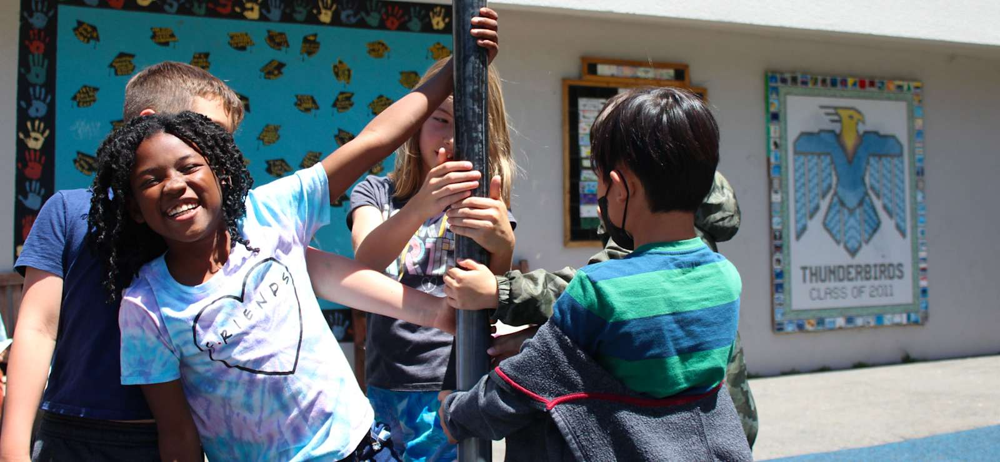

Find what you need at Thornhill.
School and PFC information, the calendar, the apps you log into, and the people to ask, in one place.

This week
Full calendar- Oct14Minimum Day (every Wednesday)Wed, All day
- Oct15School Picture DayThu, All day
- Oct17ThornChill Fall FestivalSat, 11:00 AM to 2:00 PM
Which app?
All loginsAnnual Fund
This year's goal. The PFC spends about $1,100 per child each year beyond what the state funds.
Give todayVolunteer
Classroom and field trip help needs a green clearance badge from the Oakland Ed Fund. Event days and room parent roles are open to everyone.
How to startThe PFC board
Parents who run the PFC, what each role does, and who to email. Open roles include Auction Chair, Auditor, and Site and Safety.
Meet the boardQuick answers
I just enrolled. What do I set up first?
Three things. Check that ParentSquare messages reach you (the school office can confirm your email and phone). Accept the Konstella invitation that arrives in August, or request one from vpcommunications@thornhillschool.org. Subscribe to the school calendar.
How do I report an absence?
Email attendance@thornhillschool.org (preferred) or call the office at (510) 879-2157 and leave a voicemail.
Which app has my child's grades?
The Aeries Parent Portal at oaklandusd.aeries.net/student. For elementary report cards, choose Grades, then Standards Based Report Card.
I never got a Konstella invite.
One parent per child receives the August invitation. Email vpcommunications@thornhillschool.org with your child's name, grade, and classroom and the PFC will send one.
How do I get something into the newsletter?
Email the article and any photo to newsletter@thornhillschool.org by 8 PM Thursday. It goes out Tuesday.
What does the PFC actually pay for?
The library and librarian, music for every grade, PE, teacher aides, the art program, the garden, technology, and more. The PFC spends about $1,100 per child each year beyond what the state funds. The Annual Fund goal this year is $265,000.